长上下文注意力基准测试#
从内核效率到分布式可扩展性
为评估 Flex-Flash-Attention (FFA) 内核的性能和灵活性，并验证 MagiAttention 在超长、异构掩码训练中的分布式可扩展性，我们在现代 GPU（如 Hopper 和 Blackwell）上对内核和分布式注意力模块在前向和反向传播中跨多种掩码模式（标准和不规则）进行吞吐量基准测试，并与最先进的内核级和分布式级基线进行对比。
基准测试设置#
通用配置#
为了聚焦序列长度和掩码模式的影响，我们使用如下表所示的常见训练设置固定其他数据和模型配置。
设置 |
值 |
|---|---|
注意力类型 |
自注意力，其中 |
批次大小（b） |
1 |
头数（nh） |
nhq:nhk:nhv = 64:8:8 (GQA) |
头维度（hd） |
128 |
dtype |
|
窗口大小 |
1024（仅用于 sliding window 掩码） |
吞吐量指标#
吞吐量以 \(\texttt{TFLOPs/s}\) 衡量（内核级基准测试）和 \(\texttt{TFLOPs/s/GPU}\)（分布式基准测试），分别基于注意力计算中前向和反向传播涉及的浮点运算总数 (\(\texttt{FLOPs}\)) 计算。
每个 \(\mathrm{AttnSlice}\) 的 \(\texttt{FLOPs}\) 使用以下公式计算，总 \(\texttt{FLOPs}\) 是所有 \(\mathrm{AttnSlice}\) 的总和：
吞吐量按以下方式计算：
数据分布和采样#
为反映真实的长上下文训练，我们从代表性训练数据集中提取序列长度分布，并用于构建内核级和分布式级实验的变长输入（见 图 19）。
{kind=link}
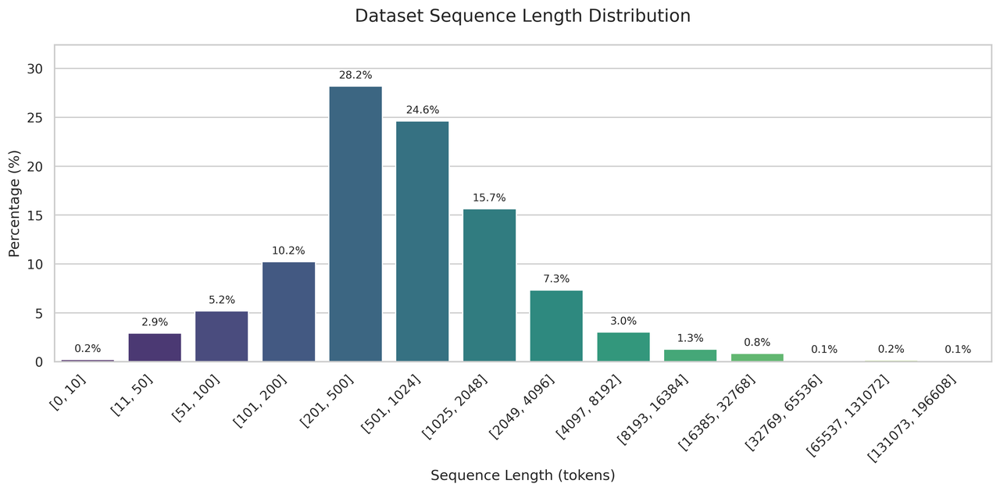
图 19 从真实数据集中提取的序列长度分布，用于采样和构建内核级和分布式级实验的变长数据。#
我们对数据集进行洗牌，将样本依次打包成数据包，然后重新洗牌这些数据包以形成最终采样集，我们将从中获取一部分数据包用于 varlen 掩码模式的实验。这保留了原始 token 长度分布，使每个数据包中来自长短样本的 token 概率与数据集匹配。
为避免采样的变长数据退化为纯 full/causal 掩码而影响评估，我们限制每个样本的长度最多为总序列长度的 \(\frac{1}{4}\)（例如，在使用 64K 总序列长度测量时，没有样本超过 16K）。
内核基线#
在 Hopper 上，我们将 FFA 内核与广泛使用的基线进行对比：PyTorch 的融合 SDPA [PyTorch, n.d.]、Flash Attention 2 (FA2) [Dao, 2023]、Flash Attention 3 (FA3) [Shah et al., 2024]、来自 TransformerEngine 的 NVIDIA cuDNN 融合注意力内核 [NVIDIA, 2024]，以及 PyTorch 的新 FlexAttention [Dong et al., 2024] 和百度的 FlashMask [Wang et al., 2025] 作为灵活掩码基线。
在 Blackwell 上，我们将 FFA_FA4 内核与相同基线进行对比，用 Flash Attention 4 (FA4) [Dao et al., 2025] 替代 FA2 和 FA3，因为 FFA 和 FA3 都是为 Hopper 定制的，而 FA2 未针对 SM90+ 架构优化。我们不报告 FA4 的反向性能，因为它目前对 varlen 掩码缺乏稳健支持，尤其是在稳定版本 2.8.3 上。
分布式基线#
我们将 MagiAttention 与集成到 Megatron-LM 中作为上下文并行 (CP) 后端的最先进分布式注意力机制进行对比，包括 Ulysess [Jacobs et al., 2023]、Ring P2P [Liu et al., 2023]、Ring AllGather [Grattafiori et al., 2024]、USP [Fang and Zhao, 2024]、LoongTrain [Gu et al., 2024] 和 Megatron HybridCP [NVIDIA, 2025]。其中许多在 MagiAttention 主博客文章的相关工作部分有讨论。
在 Hopper 上，所有基线使用 FA3 内核作为注意力后端，以确保与我们的 FFA 内核进行公平比较。
在 Blackwell 上，由于 FA3 针对 Hopper 而 FA4 在稳定版本 2.8.3 上目前缺乏对 varlen 掩码的稳健反向支持，基线使用 cuDNN 内核而我们使用 FFA_FA4 后端。此外，Megatron HybridCP（需要 FA3）在 Blackwell 评估中被省略。
内核级别#
对于内核级基准测试，我们在 5 种常见掩码模式上评估内核，包括 full、causal、varlen full、varlen causal 和 sliding window causal，以及 Magi-1 中使用的一种不规则 varlen block causal 掩码，以评估性能和灵活性，总序列长度从 1K,2K,4K,..., 变化到 64K，涵盖前向和反向传播。
结果在以下图表中报告，图例-名称映射如下所述：
图例 |
名称 |
|---|---|
ffa |
|
fa2 / fa3 / fa4 |
|
cudnn |
NVIDIA |
sdpa |
PyTorch 的 |
flex |
PyTorch 的 |
flash_mask |
百度的 |
备注
\(\mathbf{X}\) 符号表示由于内核限制或引发错误（例如 Cuda Out of Memory）而在该配置中不支持的注意力内核。
H100#
Full 掩码#

图 20 （a）前向传播#

图 21 （b）反向传播#
在 H100 上对 FFA 的 full 掩码性能和灵活性进行基线对比基准测试。
Causal 掩码#

图 22 （a）前向传播#

图 23 （b）反向传播#
在 H100 上对 FFA 的 causal 掩码性能和灵活性进行基线对比基准测试。
Varlen Full 掩码#

图 24 （a）前向传播#

图 25 （b）反向传播#
在 H100 上对 FFA 的 varlen full 掩码性能和灵活性进行基线对比基准测试。
Varlen Causal 掩码#

图 26 （a）前向传播#

图 27 （b）反向传播#
在 H100 上对 FFA 的 varlen causal 掩码性能和灵活性进行基线对比基准测试。
Sliding Window Causal 掩码#

图 28 （a）前向传播#

图 29 （b）反向传播#
在 H100 上对 FFA 的 sliding window causal 掩码性能和灵活性进行基线对比基准测试。
Varlen Block Causal 掩码 🔥#

图 30 （a）前向传播#

图 31 （b）反向传播#
在 H100 上对 FFA 的 varlen block causal 掩码性能和灵活性进行基线对比基准测试。
B200#
Full 掩码#

图 32 （a）前向传播#

图 33 （b）反向传播#
在 B200 上对 FFA_FA4 的 full 掩码性能和灵活性进行基线对比基准测试。
Causal 掩码#

图 34 （a）前向传播#

图 35 （b）反向传播#
在 B200 上对 FFA_FA4 的 causal 掩码性能和灵活性进行基线对比基准测试。
Varlen Full 掩码#

图 36 （a）前向传播#

图 37 （b）反向传播#
在 B200 上对 FFA_FA4 的 varlen full 掩码性能和灵活性进行基线对比基准测试。
Varlen Causal 掩码#

图 38 （a）前向传播#

图 39 （b）反向传播#
在 B200 上对 FFA_FA4 的 varlen causal 掩码性能和灵活性进行基线对比基准测试。
Sliding Window Causal 掩码#

图 40 （a）前向传播#

图 41 （b）反向传播#
在 B200 上对 FFA_FA4 的 sliding window causal 掩码性能和灵活性进行基线对比基准测试。
Varlen Block Causal 掩码 🔥#

图 42 （a）前向传播#

图 43 （b）反向传播#
在 B200 上对 FFA_FA4 的 varlen block causal 掩码性能和灵活性进行基线对比基准测试。
分布式级别#
对于分布式级基准测试，我们在 4 种常见掩码模式上评估 CP 策略，包括 full、causal、varlen full 和 varlen causal，以评估性能和可扩展性，cp_size 从 8 扩展到 64，涵盖前向和反向传播。
至于总序列长度，我们将其与 cp_size 线性扩展，并固定每设备序列长度以反映与 GPU 显存容量相关的常见训练配置，例如 H100 为 8K，B200 为 16K。
结果在以下图表中报告，图例-名称映射如下所述：
图例 |
名称 |
|---|---|
magi_attn-a2av |
使用基于 |
magi_attn-native |
使用原生 group collective 的 |
ulysses |
|
ring_p2p |
|
ring_allgather |
|
usp |
|
loongtrain |
|
hybrid_dcp |
Megatron |
备注
对于 MagiAttention，我们包含了两个使用不同 group collective 后端的实例：一个使用原始基于 AlltoAll-v 的实现，另一个使用基于 DeepEP [Zhao et al., 2025] 的原生内核，以展示新原生后端带来的显著收益。
警告
我们在 MagiAttention 上应用了一些实验性功能以进一步优化基准测试性能，这些功能可能默认未启用或尚未完全准备好用于生产环境。
因此，本节中 MagiAttention 的基准测试结果旨在展示我们设计的潜在性能和可扩展性，而生产环境中的实际性能可能有所不同并需要针对性调优。
我们将持续优化和稳定这些功能并简化生产环境的采用，非常欢迎用户试用这些功能并向我们提供反馈。
H100#
Full 掩码#
{kind=link}
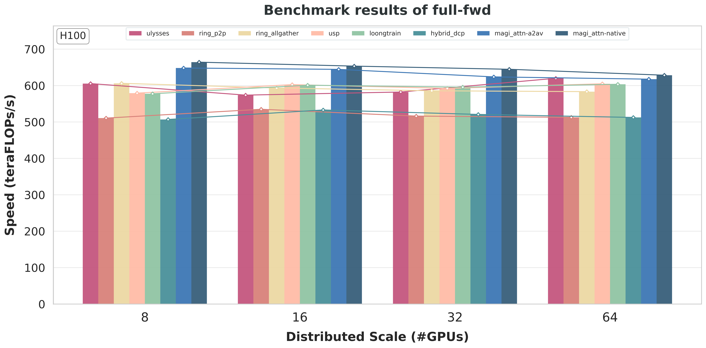
图 44 （a）前向传播#
{kind=link}
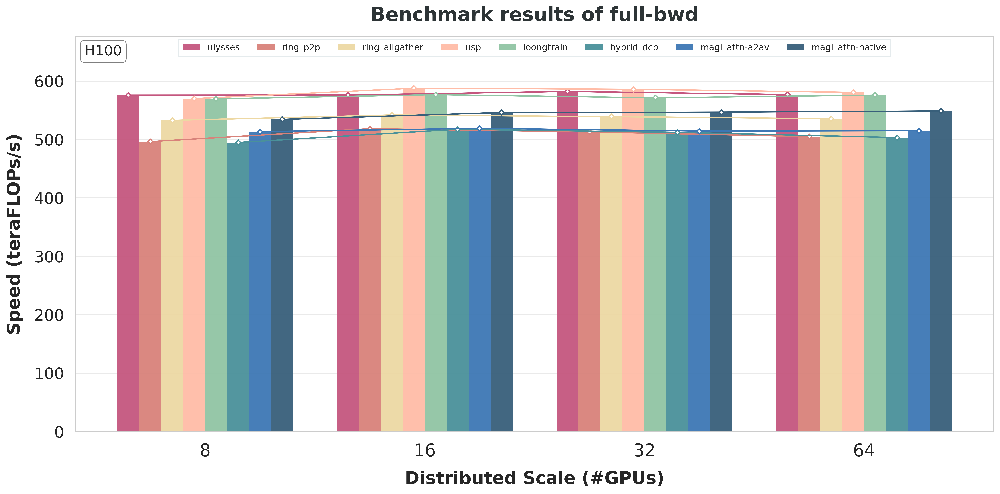
图 45 （b）反向传播#
在 H100 上对 MagiAttention 的 full 掩码性能和可扩展性进行基线对比基准测试。
Causal 掩码#
{kind=link}
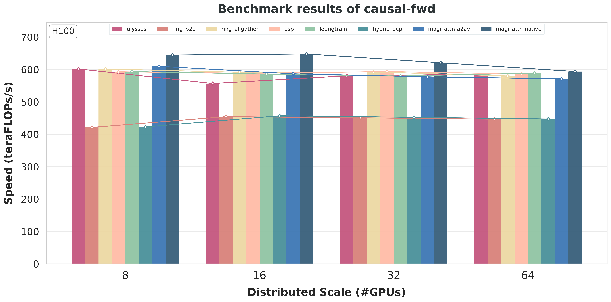
图 46 （a）前向传播#
{kind=link}
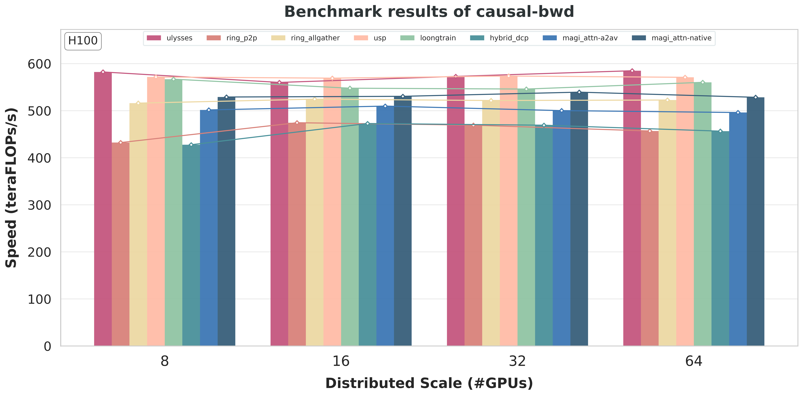
图 47 （b）反向传播#
在 H100 上对 MagiAttention 的 causal 掩码性能和可扩展性进行基线对比基准测试。
Varlen Full 掩码 🔥#
{kind=link}
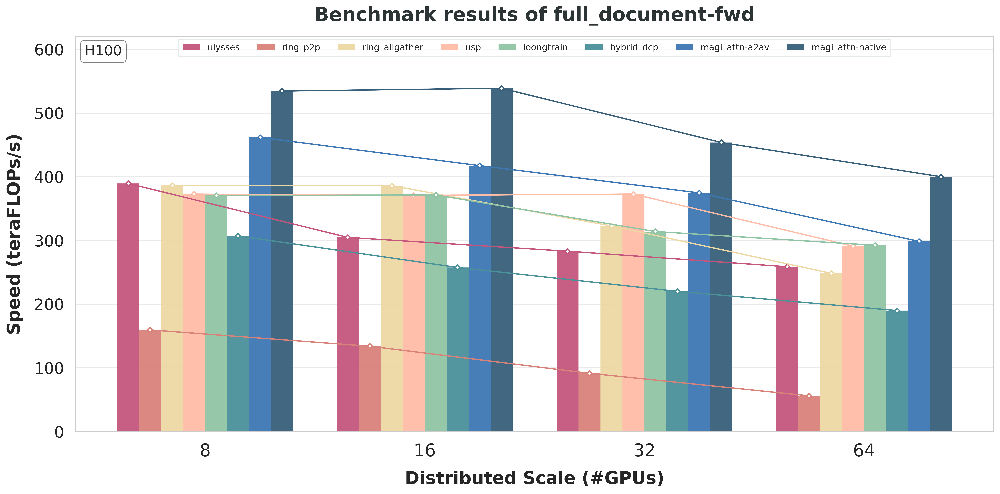
图 48 （a）前向传播#
{kind=link}
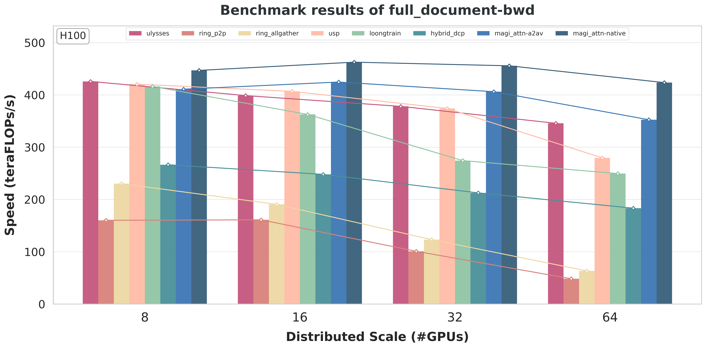
图 49 （b）反向传播#
在 H100 上对 MagiAttention 的 varlen full 掩码性能和可扩展性进行基线对比基准测试。
Varlen Causal 掩码 🔥#
{kind=link}
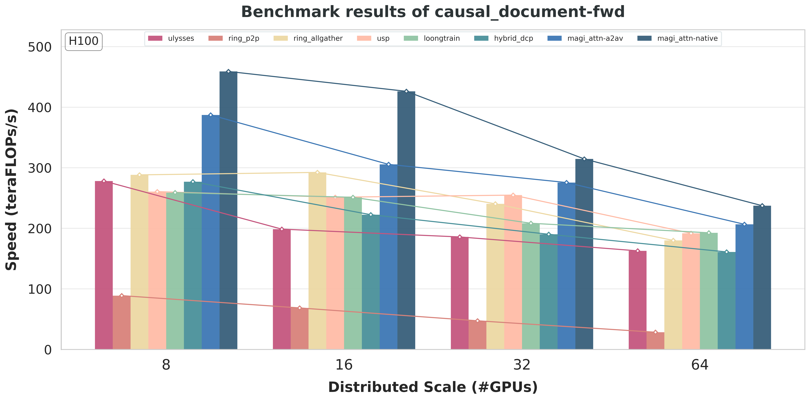
图 50 （a）前向传播#

图 51 （b）反向传播#
在 H100 上对 MagiAttention 的 varlen causal 掩码性能和可扩展性进行基线对比基准测试。
B200#
Full 掩码#

图 52 （a）前向传播#
{kind=link}
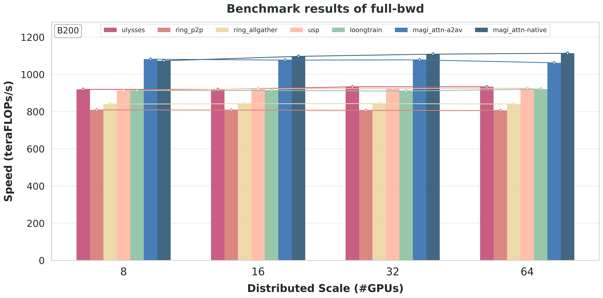
图 53 （b）反向传播#
在 B200 上对 MagiAttention 的 full 掩码性能和可扩展性进行基线对比基准测试。
Causal 掩码#
{kind=link}
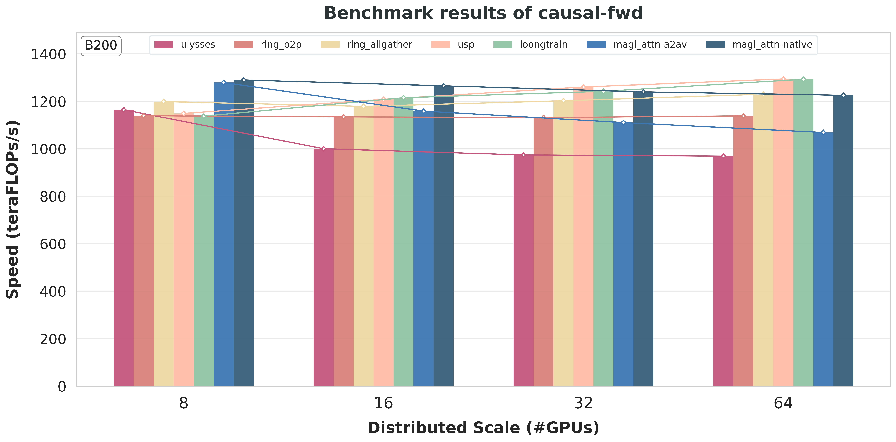
图 54 （a）前向传播#
{kind=link}
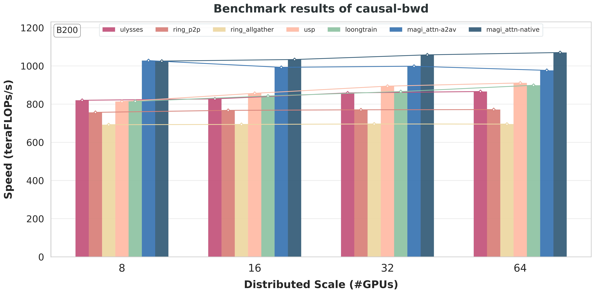
图 55 （b）反向传播#
在 B200 上对 MagiAttention 的 causal 掩码性能和可扩展性进行基线对比基准测试。
Varlen Full 掩码 🔥#
{kind=link}
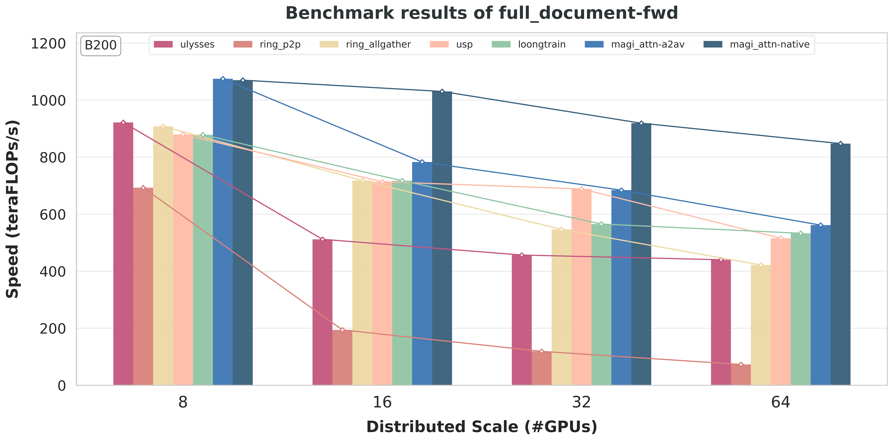
图 56 （a）前向传播#
{kind=link}
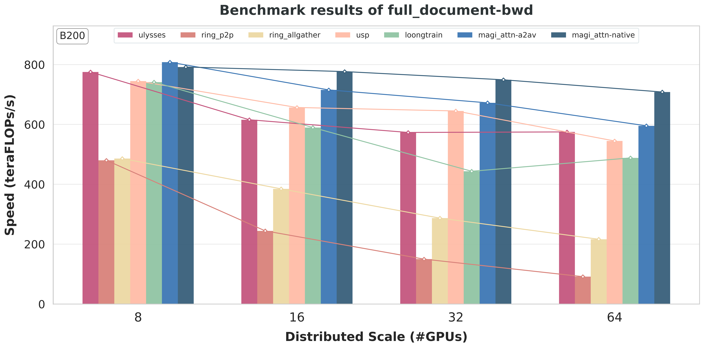
图 57 （b）反向传播#
在 B200 上对 MagiAttention 的 varlen full 掩码性能和可扩展性进行基线对比基准测试。
Varlen Causal 掩码 🔥#

图 58 （a）前向传播#

图 59 （b）反向传播#
在 B200 上对 MagiAttention 的 varlen causal 掩码性能和可扩展性进行基线对比基准测试。
引用#
如果你在研究中发现 MagiAttention 有用，请引用：
@misc{magiattention2025,
title={MagiAttention: A Distributed Attention Towards Linear Scalability for Ultra-Long Context, Heterogeneous Mask Training},
author={Zewei, Tao and Yunpeng, Huang},
year={2025},
howpublished={\url{https://github.com/SandAI-org/MagiAttention/}},
}
参考文献#
Tri Dao. Flashattention-2: faster attention with better parallelism and work partitioning. arXiv preprint arXiv:2307.08691, 2023.
Tri Dao, Guessous Driss, and Tsang Henry. Flashattention cute module [software documentation]. GitHub Repository README, 2025. URL: Dao-AILab/flash-attention.
Juechu Dong, Boyuan Feng, Driss Guessous, Yanbo Liang, and Horace He. Flex attention: a programming model for generating optimized attention kernels. 2024. URL: https://arxiv.org/abs/2412.05496, arXiv:2412.05496.
Jiarui Fang and Shangchun Zhao. Usp: a unified sequence parallelism approach for long context generative ai. 2024. URL: https://arxiv.org/abs/2405.07719, arXiv:2405.07719.
Aaron Grattafiori, Abhimanyu Dubey, Abhinav Jauhri, Abhinav Pandey, Abhishek Kadian, Ahmad Al-Dahle, Aiesha Letman, Akhil Mathur, Alan Schelten, Alex Vaughan, Amy Yang, Angela Fan, Anirudh Goyal, Anthony Hartshorn, Aobo Yang, Archi Mitra, Archie Sravankumar, Artem Korenev, Arthur Hinsvark, Arun Rao, Aston Zhang, Aurelien Rodriguez, Austen Gregerson, Ava Spataru, Baptiste Roziere, Bethany Biron, Binh Tang, Bobbie Chern, Charlotte Caucheteux, Chaya Nayak, Chloe Bi, Chris Marra, Chris McConnell, Christian Keller, Christophe Touret, Chunyang Wu, Corinne Wong, Cristian Canton Ferrer, Cyrus Nikolaidis, Damien Allonsius, Daniel Song, Danielle Pintz, Danny Livshits, Danny Wyatt, David Esiobu, Dhruv Choudhary, Dhruv Mahajan, Diego Garcia-Olano, Diego Perino, Dieuwke Hupkes, Egor Lakomkin, Ehab AlBadawy, Elina Lobanova, Emily Dinan, Eric Michael Smith, Filip Radenovic, Francisco Guzmán, Frank Zhang, Gabriel Synnaeve, Gabrielle Lee, Georgia Lewis Anderson, Govind Thattai, Graeme Nail, Gregoire Mialon, Guan Pang, Guillem Cucurell, Hailey Nguyen, Hannah Korevaar, Hu Xu, Hugo Touvron, Iliyan Zarov, Imanol Arrieta Ibarra, Isabel Kloumann, Ishan Misra, Ivan Evtimov, Jack Zhang, Jade Copet, Jaewon Lee, Jan Geffert, Jana Vranes, Jason Park, Jay Mahadeokar, Jeet Shah, Jelmer van der Linde, Jennifer Billock, Jenny Hong, Jenya Lee, Jeremy Fu, Jianfeng Chi, Jianyu Huang, Jiawen Liu, Jie Wang, Jiecao Yu, Joanna Bitton, Joe Spisak, Jongsoo Park, Joseph Rocca, Joshua Johnstun, Joshua Saxe, Junteng Jia, Kalyan Vasuden Alwala, Karthik Prasad, Kartikeya Upasani, Kate Plawiak, Ke Li, Kenneth Heafield, Kevin Stone, Khalid El-Arini, Krithika Iyer, Kshitiz Malik, Kuenley Chiu, Kunal Bhalla, Kushal Lakhotia, Lauren Rantala-Yeary, Laurens van der Maaten, Lawrence Chen, Liang Tan, Liz Jenkins, Louis Martin, Lovish Madaan, Lubo Malo, Lukas Blecher, Lukas Landzaat, Luke de Oliveira, Madeline Muzzi, Mahesh Pasupuleti, Mannat Singh, Manohar Paluri, Marcin Kardas, Maria Tsimpoukelli, Mathew Oldham, Mathieu Rita, Maya Pavlova, Melanie Kambadur, Mike Lewis, Min Si, Mitesh Kumar Singh, Mona Hassan, Naman Goyal, Narjes Torabi, Nikolay Bashlykov, Nikolay Bogoychev, Niladri Chatterji, Ning Zhang, Olivier Duchenne, Onur Çelebi, Patrick Alrassy, Pengchuan Zhang, Pengwei Li, Petar Vasic, Peter Weng, Prajjwal Bhargava, Pratik Dubal, Praveen Krishnan, Punit Singh Koura, Puxin Xu, Qing He, Qingxiao Dong, Ragavan Srinivasan, Raj Ganapathy, Ramon Calderer, Ricardo Silveira Cabral, Robert Stojnic, Roberta Raileanu, Rohan Maheswari, Rohit Girdhar, Rohit Patel, Romain Sauvestre, Ronnie Polidoro, Roshan Sumbaly, Ross Taylor, Ruan Silva, Rui Hou, Rui Wang, Saghar Hosseini, Sahana Chennabasappa, Sanjay Singh, Sean Bell, Seohyun Sonia Kim, Sergey Edunov, Shaoliang Nie, Sharan Narang, Sharath Raparthy, Sheng Shen, Shengye Wan, Shruti Bhosale, Shun Zhang, Simon Vandenhende, Soumya Batra, Spencer Whitman, Sten Sootla, Stephane Collot, Suchin Gururangan, Sydney Borodinsky, Tamar Herman, Tara Fowler, Tarek Sheasha, Thomas Georgiou, Thomas Scialom, Tobias Speckbacher, Todor Mihaylov, Tong Xiao, Ujjwal Karn, Vedanuj Goswami, Vibhor Gupta, Vignesh Ramanathan, Viktor Kerkez, Vincent Gonguet, Virginie Do, Vish Vogeti, Vítor Albiero, Vladan Petrovic, Weiwei Chu, Wenhan Xiong, Wenyin Fu, Whitney Meers, Xavier Martinet, Xiaodong Wang, Xiaofang Wang, Xiaoqing Ellen Tan, Xide Xia, Xinfeng Xie, Xuchao Jia, Xuewei Wang, Yaelle Goldschlag, Yashesh Gaur, Yasmine Babaei, Yi Wen, Yiwen Song, Yuchen Zhang, Yue Li, Yuning Mao, Zacharie Delpierre Coudert, Zheng Yan, Zhengxing Chen, Zoe Papakipos, Aaditya Singh, Aayushi Srivastava, Abha Jain, Adam Kelsey, Adam Shajnfeld, Adithya Gangidi, Adolfo Victoria, Ahuva Goldstand, Ajay Menon, Ajay Sharma, Alex Boesenberg, Alexei Baevski, Allie Feinstein, Amanda Kallet, Amit Sangani, Amos Teo, Anam Yunus, Andrei Lupu, Andres Alvarado, Andrew Caples, Andrew Gu, Andrew Ho, Andrew Poulton, Andrew Ryan, Ankit Ramchandani, Annie Dong, Annie Franco, Anuj Goyal, Aparajita Saraf, Arkabandhu Chowdhury, Ashley Gabriel, Ashwin Bharambe, Assaf Eisenman, Azadeh Yazdan, Beau James, Ben Maurer, Benjamin Leonhardi, Bernie Huang, Beth Loyd, Beto De Paola, Bhargavi Paranjape, Bing Liu, Bo Wu, Boyu Ni, Braden Hancock, Bram Wasti, Brandon Spence, Brani Stojkovic, Brian Gamido, Britt Montalvo, Carl Parker, Carly Burton, Catalina Mejia, Ce Liu, Changhan Wang, Changkyu Kim, Chao Zhou, Chester Hu, Ching-Hsiang Chu, Chris Cai, Chris Tindal, Christoph Feichtenhofer, Cynthia Gao, Damon Civin, Dana Beaty, Daniel Kreymer, Daniel Li, David Adkins, David Xu, Davide Testuggine, Delia David, Devi Parikh, Diana Liskovich, Didem Foss, Dingkang Wang, Duc Le, Dustin Holland, Edward Dowling, Eissa Jamil, Elaine Montgomery, Eleonora Presani, Emily Hahn, Emily Wood, Eric-Tuan Le, Erik Brinkman, Esteban Arcaute, Evan Dunbar, Evan Smothers, Fei Sun, Felix Kreuk, Feng Tian, Filippos Kokkinos, Firat Ozgenel, Francesco Caggioni, Frank Kanayet, Frank Seide, Gabriela Medina Florez, Gabriella Schwarz, Gada Badeer, Georgia Swee, Gil Halpern, Grant Herman, Grigory Sizov, Guangyi, Zhang, Guna Lakshminarayanan, Hakan Inan, Hamid Shojanazeri, Han Zou, Hannah Wang, Hanwen Zha, Haroun Habeeb, Harrison Rudolph, Helen Suk, Henry Aspegren, Hunter Goldman, Hongyuan Zhan, Ibrahim Damlaj, Igor Molybog, Igor Tufanov, Ilias Leontiadis, Irina-Elena Veliche, Itai Gat, Jake Weissman, James Geboski, James Kohli, Janice Lam, Japhet Asher, Jean-Baptiste Gaya, Jeff Marcus, Jeff Tang, Jennifer Chan, Jenny Zhen, Jeremy Reizenstein, Jeremy Teboul, Jessica Zhong, Jian Jin, Jingyi Yang, Joe Cummings, Jon Carvill, Jon Shepard, Jonathan McPhie, Jonathan Torres, Josh Ginsburg, Junjie Wang, Kai Wu, Kam Hou U, Karan Saxena, Kartikay Khandelwal, Katayoun Zand, Kathy Matosich, Kaushik Veeraraghavan, Kelly Michelena, Keqian Li, Kiran Jagadeesh, Kun Huang, Kunal Chawla, Kyle Huang, Lailin Chen, Lakshya Garg, Lavender A, Leandro Silva, Lee Bell, Lei Zhang, Liangpeng Guo, Licheng Yu, Liron Moshkovich, Luca Wehrstedt, Madian Khabsa, Manav Avalani, Manish Bhatt, Martynas Mankus, Matan Hasson, Matthew Lennie, Matthias Reso, Maxim Groshev, Maxim Naumov, Maya Lathi, Meghan Keneally, Miao Liu, Michael L. Seltzer, Michal Valko, Michelle Restrepo, Mihir Patel, Mik Vyatskov, Mikayel Samvelyan, Mike Clark, Mike Macey, Mike Wang, Miquel Jubert Hermoso, Mo Metanat, Mohammad Rastegari, Munish Bansal, Nandhini Santhanam, Natascha Parks, Natasha White, Navyata Bawa, Nayan Singhal, Nick Egebo, Nicolas Usunier, Nikhil Mehta, Nikolay Pavlovich Laptev, Ning Dong, Norman Cheng, Oleg Chernoguz, Olivia Hart, Omkar Salpekar, Ozlem Kalinli, Parkin Kent, Parth Parekh, Paul Saab, Pavan Balaji, Pedro Rittner, Philip Bontrager, Pierre Roux, Piotr Dollar, Polina Zvyagina, Prashant Ratanchandani, Pritish Yuvraj, Qian Liang, Rachad Alao, Rachel Rodriguez, Rafi Ayub, Raghotham Murthy, Raghu Nayani, Rahul Mitra, Rangaprabhu Parthasarathy, Raymond Li, Rebekkah Hogan, Robin Battey, Rocky Wang, Russ Howes, Ruty Rinott, Sachin Mehta, Sachin Siby, Sai Jayesh Bondu, Samyak Datta, Sara Chugh, Sara Hunt, Sargun Dhillon, Sasha Sidorov, Satadru Pan, Saurabh Mahajan, Saurabh Verma, Seiji Yamamoto, Sharadh Ramaswamy, Shaun Lindsay, Shaun Lindsay, Sheng Feng, Shenghao Lin, Shengxin Cindy Zha, Shishir Patil, Shiva Shankar, Shuqiang Zhang, Shuqiang Zhang, Sinong Wang, Sneha Agarwal, Soji Sajuyigbe, Soumith Chintala, Stephanie Max, Stephen Chen, Steve Kehoe, Steve Satterfield, Sudarshan Govindaprasad, Sumit Gupta, Summer Deng, Sungmin Cho, Sunny Virk, Suraj Subramanian, Sy Choudhury, Sydney Goldman, Tal Remez, Tamar Glaser, Tamara Best, Thilo Koehler, Thomas Robinson, Tianhe Li, Tianjun Zhang, Tim Matthews, Timothy Chou, Tzook Shaked, Varun Vontimitta, Victoria Ajayi, Victoria Montanez, Vijai Mohan, Vinay Satish Kumar, Vishal Mangla, Vlad Ionescu, Vlad Poenaru, Vlad Tiberiu Mihailescu, Vladimir Ivanov, Wei Li, Wenchen Wang, Wenwen Jiang, Wes Bouaziz, Will Constable, Xiaocheng Tang, Xiaojian Wu, Xiaolan Wang, Xilun Wu, Xinbo Gao, Yaniv Kleinman, Yanjun Chen, Ye Hu, Ye Jia, Ye Qi, Yenda Li, Yilin Zhang, Ying Zhang, Yossi Adi, Youngjin Nam, Yu, Wang, Yu Zhao, Yuchen Hao, Yundi Qian, Yunlu Li, Yuzi He, Zach Rait, Zachary DeVito, Zef Rosnbrick, Zhaoduo Wen, Zhenyu Yang, Zhiwei Zhao, and Zhiyu Ma. The llama 3 herd of models. 2024. URL: https://arxiv.org/abs/2407.21783, arXiv:2407.21783.
Diandian Gu, Peng Sun, Qinghao Hu, Ting Huang, Xun Chen, Yingtong Xiong, Guoteng Wang, Qiaoling Chen, Shangchun Zhao, Jiarui Fang, Yonggang Wen, Tianwei Zhang, Xin Jin, and Xuanzhe Liu. Loongtrain: efficient training of long-sequence llms with head-context parallelism. 2024. URL: https://arxiv.org/abs/2406.18485, arXiv:2406.18485.
Sam Ade Jacobs, Masahiro Tanaka, Chengming Zhang, Minjia Zhang, Shuaiwen Leon Song, Samyam Rajbhandari, and Yuxiong He. Deepspeed ulysses: system optimizations for enabling training of extreme long sequence transformer models. arXiv preprint arXiv:2309.14509, 2023. URL: https://arxiv.org/pdf/2309.14509.
Hao Liu, Matei Zaharia, and Pieter Abbeel. Ring attention with blockwise transformers for near-infinite context. arXiv preprint arXiv:2310.01889, 2023.
NVIDIA. Accelerating transformers with nvidia cudnn 9. https://developer.nvidia.com/blog/accelerating-transformers-with-nvidia-cudnn-9/, 2024. Accessed: 2024-12-12.
PyTorch. Torch.nn.functional.scaled_dot_product_attention - pytorch 2.6 documentation. https://pytorch.org/docs/stable/generated/torch.nn.functional.scaled_dot_product_attention.html.
Jay Shah, Ganesh Bikshandi, Ying Zhang, Vijay Thakkar, Pradeep Ramani, and Tri Dao. Flashattention-3: fast and accurate attention with asynchrony and low-precision. 2024. URL: https://arxiv.org/abs/2407.08608, arXiv:2407.08608.
Guoxia Wang, Jinle Zeng, Xiyuan Xiao, Siming Wu, Jiabin Yang, Lujing Zheng, Zeyu Chen, Jiang Bian, Dianhai Yu, and Haifeng Wang. Flashmask: efficient and rich mask extension of flashattention. 2025. URL: https://arxiv.org/abs/2410.01359, arXiv:2410.01359.
Chenggang Zhao, Shangyan Zhou, Liyue Zhang, Chengqi Deng, Zhean Xu, Yuxuan Liu, Kuai Yu, Jiashi Li, and Liang Zhao. Deepep: an efficient expert-parallel communication library. deepseek-ai/DeepEP, 2025.